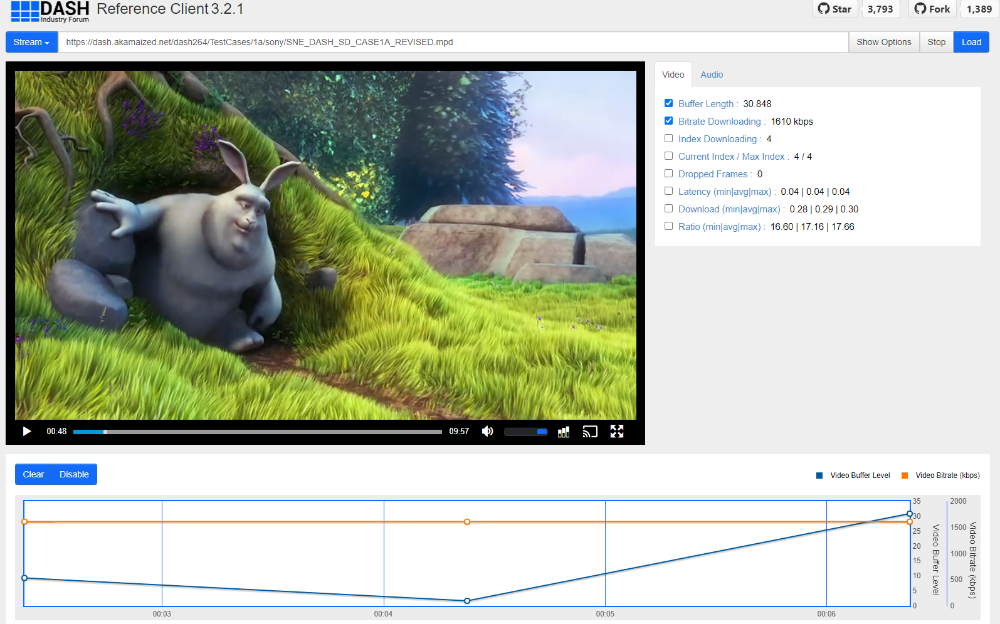
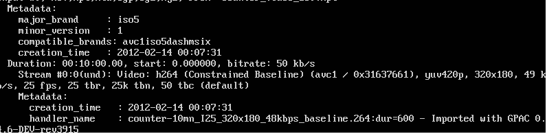
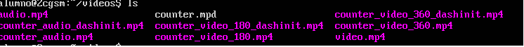
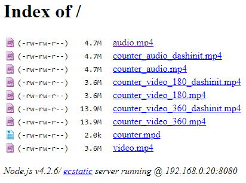
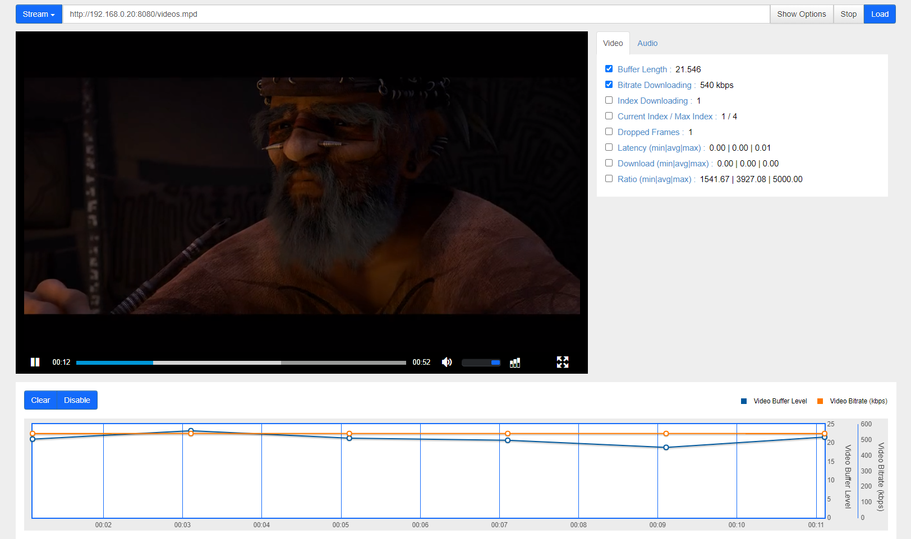

Memoria
Descripción de la práctica
En esta quinta práctica de la asignatura introducimos los conceptos de reproducción adaptativa de videos con dash gracias a sus manifiestos, y de que manera se crean este tipo de streamings con una máquina virtual de linux , y ejecución de comandos que nos permiten obtener los manifiestos mencionados. Finalmente utilizamos el manifiesto y porciones de audio y video (En distintas calidades) y los llamamos en vez de utilizar un archivo local para la reproducción del video.
Ejercicio 1
En este ejercicio respondemos a varias preguntas sobre los manifiestos:
Manifiesto 1
Q1-¿Cuántas codificaciones de audio distintas puede utilizar el cliente para adaptarse a condiciones cambiantes de la red?- 1 codificación audio : mp4a.40.5
- 1 codificacion video con 5 distintas resoluciones: avc1.4D401E
Manifiesto 2
Q1-¿Cuántas codificaciones de audio distintas puede utilizar el cliente para adaptarse a condiciones cambiantes de la red?- 1 codificación audio : mp4a.40.29
- 1 codificacion video con 3 distintas resoluciones: avc1.4d401f
Ejercicio 2
Continuamos la práctica utilizando un reproductor de prueba en la url https://dashif.org/ donde podemos probar a reproducir videos según los manifiestos que se cargen. De este modo cargamos los dos manifiestos que hemos descargado previamente y observamos las distintas calidades y estadísticas de las reproducciones.
Ejercicio 3
La práctica sigue descargando un .ova con una máquina virtual donde comenzaremos descargando el software necesario para la ejecución de comandos para extraer video y audio de ficheros .mp4. Este software es el paquete MP4Box que descargamos con apt-get. Además aprovechamos y descargamos los videos correspondientes para probar sus estadísticas (fprobe) y también probar a extraer su audio o su video de manera independiente (ffmpeg)
Aquí ponemos un ejemplo del listado de ficheros obtenidos tras la creación del manifiesto
Ejercicio 3.2
En este momento, continuamos instalando node y npm junto a http-server para lanzar facilmente un servidor http con los ficheros de nuestro directorio, de manera que podamos acceder a los videos a través del manifiesto facilmente
Ejercicio 3.3
En esta pequeña sección probamos múltiples comandos relacionados con nuestros adaptadores de red , proporcionandoles unas estadíticas determinadas como una latencia de 400ms
Ejercicio 3.4
En este ejercicio partiendo de porciones de videos con audio creamos un manifiesto con 3 resoluciones distintas y un audio, de manera que sirviendo el directorio con http-server podamos usar el manifiesto desde el reproductor de prueba de dash:
Ejercicio 4.1
Incrustamos en una página web normal un video con un script que cargue el video de dash en el inicio de la página.
Ejercicio 4.2
En este último ejercicio simplemente reusamos la práctica 3-2 para insertar un video con mpeg en vez de cargarlo desde local. De este modo llamamos al manifest y podemos reproducirlo de manera adaptativa.
En estos dos últimos ejercicios no pongo iframes con los mismos ya que se utiliza el manifest de mi máquina virtual.
Dificultades encontradas
únicamente he tenido problemas a la hora de instalar npm debido a la versión de node que me permitía instalar, por lo que tuve que usar repos externos para instalar npm. También estuve parado en el ejercicio 3.4 un tiempo ya que estaba usando una url con https que no me permitía acceder al manifest.